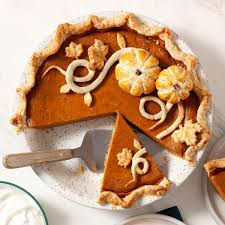

🏠︎
Painfully-Good Pumpkin Pie

What's this? Only the best pumpkin pie recipe you'll ever see!
After my second stepbrother was finished with his turkey and potatoes, I had one more suprise for him: a perfect pumpkin pie! As soon as I pulled this out of the oven, he started tearing up. I asked him what the matter was, and he told me that "pumpkin pie" was the last words of the man he ate (seperate from the armed robbery, please don't ask he's a very private person). Oops! A bit of a faux-pas. Hopefully your guests will enjoy this recipe more than my second stepbrother.
Ingredients:
- 1 9-inch Homemade pie crust , or store-bought, deep dish, unbaked
- 3/4 cup granulated sugar
- 1 teaspoon ground cinnamon
- 1/2 teaspoon salt
- 1/2 teaspoon ground ginger
- 1/4 teaspoon ground cloves
- 2 large eggs
- 15 ounce can canned pumpkin or fresh pumpkin puree
- 12 ounce can evaporated milk
Steps:
- Preheat oven to 425 degrees F
- In a large bowl beat the eggs and pumpkin together. In a separate bowl, combine the sugar, cinnamon, salt, ginger and cloves, and add to pumpkin mixture.
- Gradually stir in the evaporated milk. Carefully pour mixture into unbaked pie shell*.
- Bake at 425 degrees F for for 15 minutes. Reduce temperature to 350° F; bake for 40 to 50 minutes longer, or until the pie is set. Check for doneness by giving the pie a gentle wiggle. The center may jiggle just a tiny bit. It will continue to set up as it cools. Or, it is done when a sharp knife inserted in center comes out clean.
- Cool completely on a wire cooling rack. Serve immediately with whipped cream and caramel pecan topping, if desired.